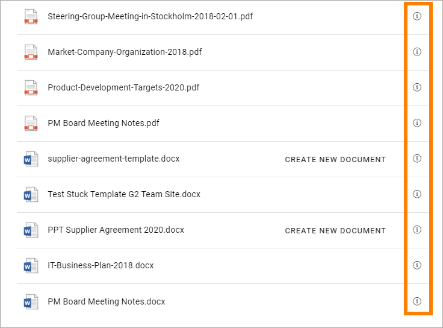
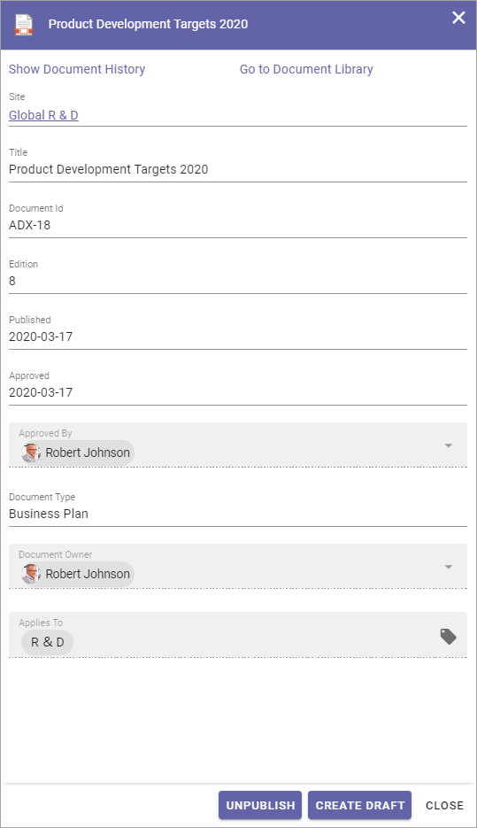

Alternative ways of creating Controlled Documents¶
The most common way of creating a new Controlled Document is to go to the Controlled Documents library in question and create the document there, but there can be alternative ways available.
Creating a new draft document from a Document Rollup¶
For authors with the right permissions a number of options can be available through the i icon (if shown) in a Document Rollup set up to display Controlled Documents. Here’s an example:
Inportant comment: The link “CREATE NEW DOCUMENT” you see in the list is NOT intended for authors of Controlled Documents. This link makes it possible for any unser to create a new document from a document template.
Here’s an example of an information window for a Controlled Document:
A Document Rollup only lists document the loged in user has rights to read. And read rights includes rights to see the document history and to see and read other published Controlled Documents in the same site. See the two links at the top in the image above.
The buttons UNPUBLISH and CREATE DRAFT are only shown if the user has Author permissions.
The author can now click CREATE DRAFT to create a new draft for the document. It is a quick way of opening the document for editing if, for example, the author discovers that some changes are needed after having read the document.
This works the same way as creating a new draft from the Published tab in the Controlled Documents library, see: Working with published documents